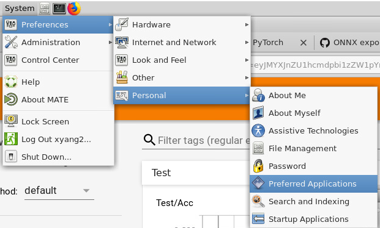

Gnome 应用菜单栏添加
使用 alacarte 即可
先安装
等价于：
- 用文本编辑器打开 /etc/xdg/menus/applications.menu文件
- 添加如下内容: esITo esito.directory esITo
- 用文本编辑器打开/usr/share/desktop-directories/下任意一个扩展名为.directory的文件,另存为esito.directory. 4.修改esito.directory文件: [Desktop Entry] Name=esITo Name[zh_CN]=esITo自定义菜单 Comment=esITo菜单 Comment[zh_CN]=esITo自定义菜单 Icon=emacs.png Type=Directory 注:Name=esITo 英文名字 必需 esITo Name[zh_CN]=esITo 中文名字 除非你用英文 Comment=esITo menu 英文注释 Comment[zh_CN]=esITo自定义菜单 中文注释 Icon=emacs.png 菜单的图标 自己到/usr/share/pixmaps目录里选 Type=Directory 表示是文件夹 必需 5.用文本编辑器打开一个/usr/share/applications目录中的快捷方式(随意),修改Categories项为Categories=esITo 6.重新起动X系统(RedHat\Fedora Core基本上需要重启Linux了) 7.其中esITo是我自己起的名字,可以为任意英文标识. 8.当你没有设置任何快捷方式到你的菜单项里时,你的菜单项是不会显示的!
＃ 添加右键打开方式
新建文件 XXX.desktop， 内容格式如下
[Desktop Entry] Name=Java Comment=Java GenericName=Java Keywords=java Exec=java -jar %f Terminal=false X-MultipleArgs=false Type=Application MimeType=application/x-java-archive StartupNotify=true
Mate桌面环境
终端
mate-terminal 作为默认终端， 不可设置终端名称以示区别， 不好用
修改默认终端， system->preferences->personal->preferred applications->system->terminal emulator
如图： 

this man is lazy, nothing left
comments powered by Disqus